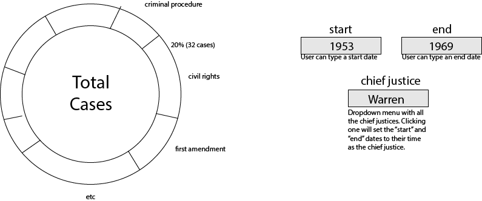

Donut Chart
Questions that can be answered:
- In which issue areas does the court decide cases?
- Does this change depending on the chief justice?
- Does this change depending on year year (i.e. in the civil rights
era?
Sketch

Implemented Interactions
- Choose a start and end date
- Choose a chief justice, in which case the start and end date will be filled in to the date range of their term
- Hover to see the # cases and the percent
Concrete example:
- The user will initially be presented with the pie chart for all the cases in the dataset (1946-2016). They will then either change the start and end year manually, or choose a chief justice which will change those dates automatically. If they wish to see the actual number of cases, or the percent of the total, they can hover over one of the sections.
Proposed impementation path:
- Start with the pie chart we have already made for the prototypes
- Change it into a donut chart using mbostock's code
- Group data by year, by issue area
- Hardcode date ranges of chief justices (information either from dataset or online sources
- Implement changing the pie chart based on date range
- Format labels and the total number of cases inside the chart